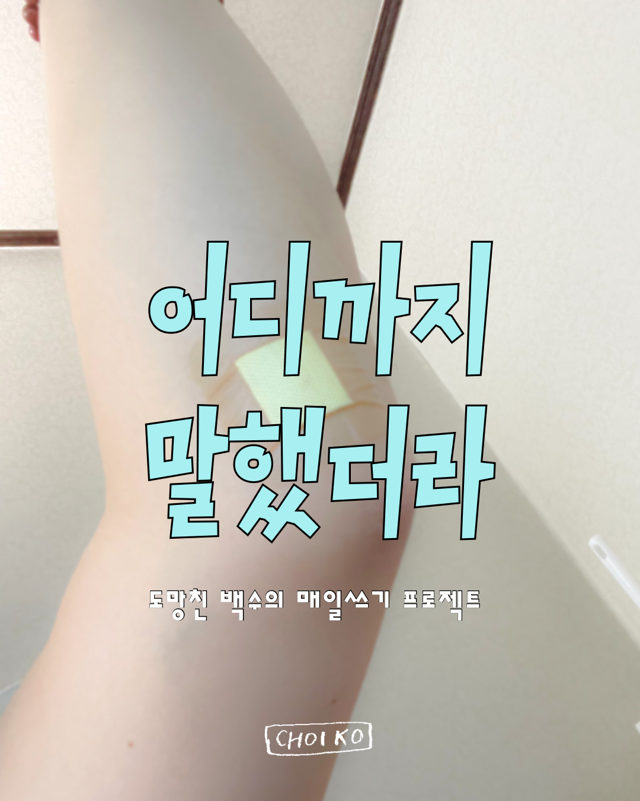
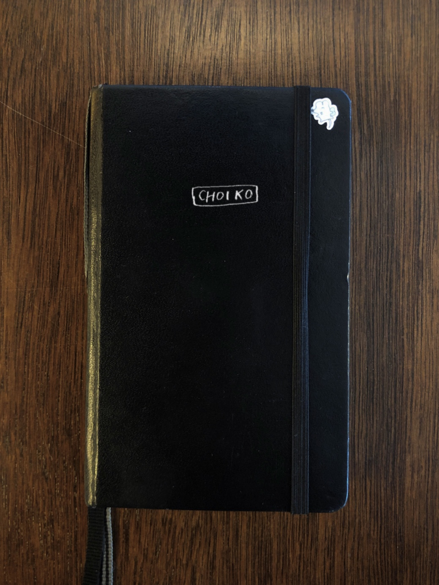
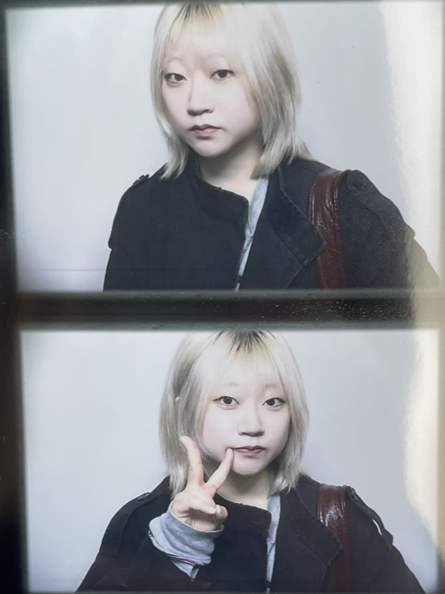
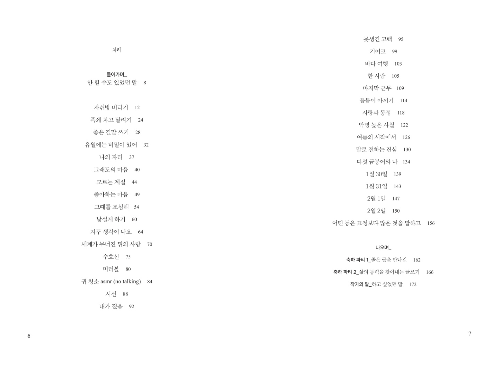
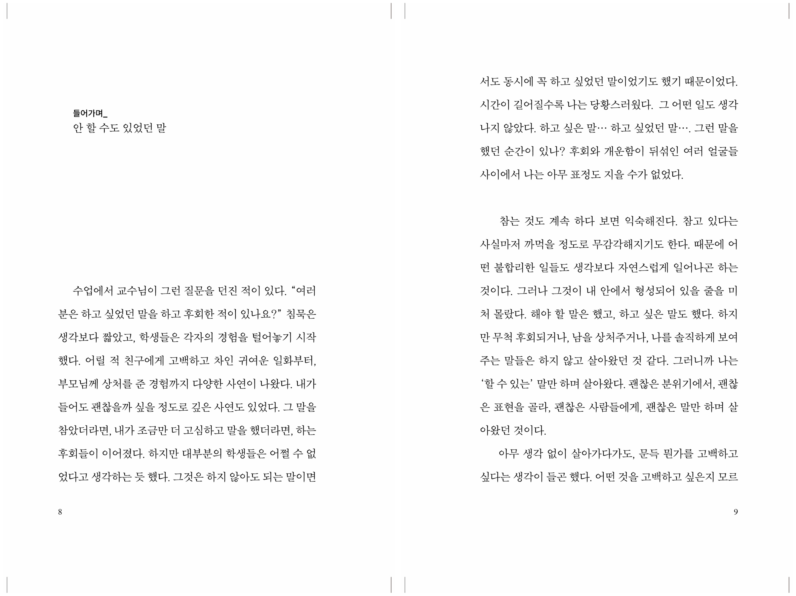
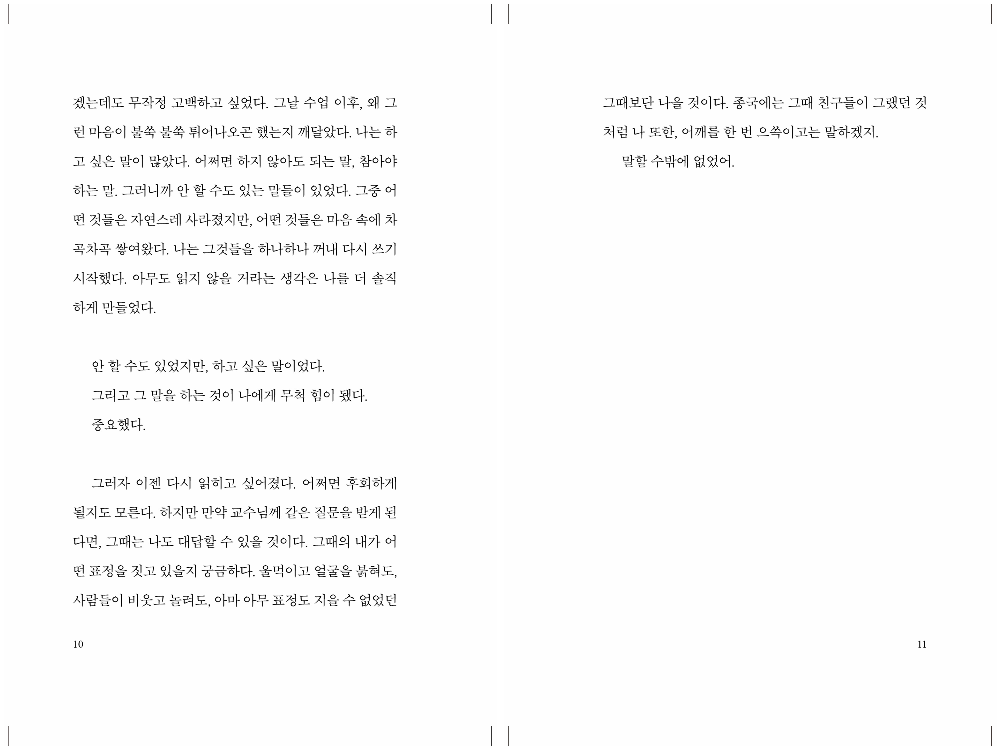
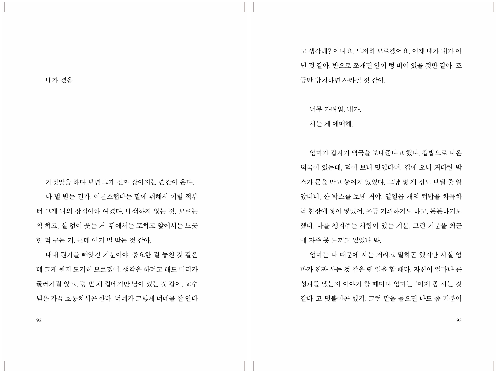
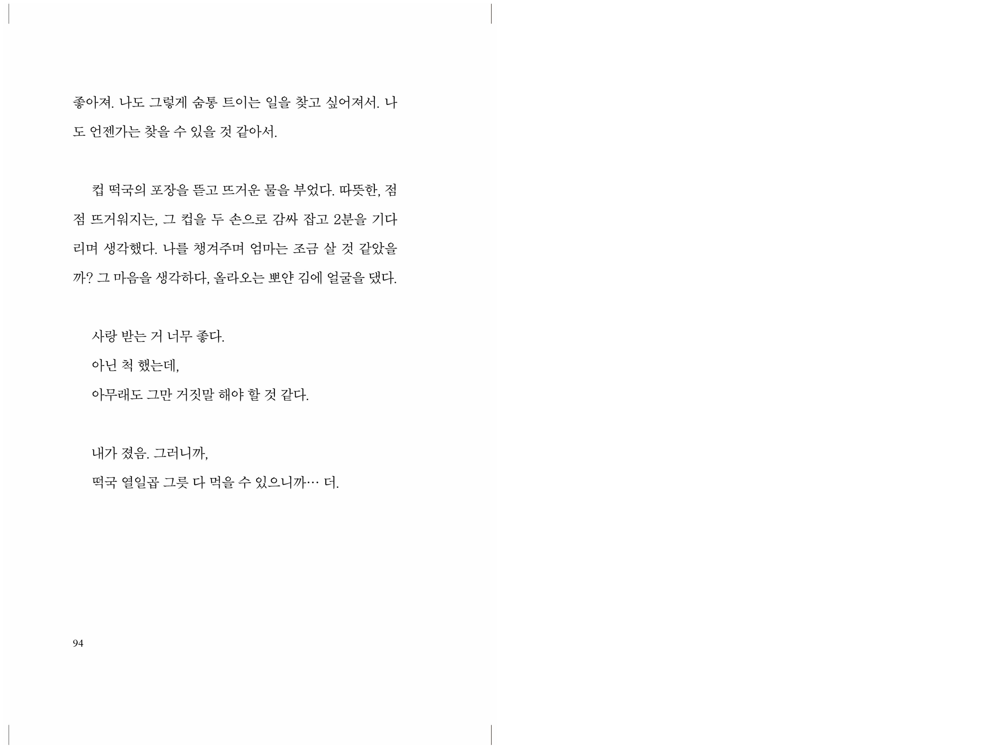

CHOIKO

유료 구독
어디까지 말했더라
월 10,000원
신청하기 →

독립출판
안 할 수도 있었던 말
15,000원
구매하기 →

나는 내 앞의 불행을 직시한다. 나는 어딘가 고장나 있고 그것을 인지한다. 고쳐지고 싶지만 사실은 고쳐지고 싶지 않기도 하다. 고장난 상태가 나에게는 익숙하다. 삐걱거리며 울고 싶은데 똑바로 걸으며 바라보는 세상은 너무 생소하다. 난생 처음 필터를 빼고 원본을 보는 것처럼 어색한 질감과 색깔. 나는 다시 새로운 시각에 적응해야 한다. 그리고 그것은 쉽지 않을 것이 분명하다. 그럴 용기는 어디서 나오지?
보통은 손 잡아줄 사람을 구했던 것 같다. 그래서 다 조졌다. 나는 조금만 불안한 상황이 오면 손을 잘라버리고 도마뱀처럼 도망가기 바빴다. 혹은 내 손을 잘라 그 사람에게 전해주며 제발 버리지 말아달라 애원했다. 누가 누구를 버려. 누가 누구를 가진 적도 없는데. 모든 것을 걸거나 버리는 습관을 간절히 고치고 싶었다. 새로운 눈을 달고 이 짓에 돌입하면 조금은 다른 결말이 올까? 하지만 나는 이제 그런 시도도 하고 싶지 않다.
나의 미숙함. 그것을 남들에게 어떻게 보여줄지 잘 모르겠다. 글쓰기를 현명하게 이용할 수 있을까? 나에게 글쓰기는 동료 같은 느낌이 강하다. 함께 어떤 산을 오르는 느낌. 굴러 떨어질 때도 함께, 정상에 오를 때도 함께 하는 동료. 쓰려고 할수록 써지지 않고, 쓰지 않으려고 할 때마다 써지는 청개구리 같은 친구이기도 하다. 하지만 이 친구와만 평생 이야기할 수는 없는 법이다.
나는 사람을 원하고 또 원하지 않아야 함을 안다. 몇몇의 행동이 중독임을 인지한다. 고쳐지고 싶지만 사실은 고쳐지고 싶지 않기도 하다. 의지의 문제가 아니라 병임을 계속해서 되뇌인다. 하지만 그런다고 이게 참아지느냐. 아무리 약이 효과가 있다고 해도 물리적으로 나를 가두는 것이 아니기 때문에 결국 내 의지도 굉장한 관여를 한다. 병원에 가는 것부터 의지가 있는 거예요. 의사는 자주 나를 위로한다. 나는 그딴 거 필요없고 날 당장 묶어줘 소리치고 싶은 것을 참는다. 농담이다.
하지만 나는 할머니가 되어서 다시 펜을 잡고 싶지 않고 지금 당장의 불행을 열심히 파헤치고 써내려가고 싶다. 그것이 내가 나를 죽이지 않을 유일한 이유이고 거기서 오는 이상한 사명감도 가끔은 가진다. 글쓰기는 세상을 미워하지 않을 수 있는 방법이자 좋아하는 것을 계속 좋아할 수 있는 힘이다. 그러니까 가난해도 외로워도 술이나 사람보단 글쓰기를 먼저 찾아야지 생각한다.
가끔은 더 잘 읽힐 방법, 더 잘 팔릴 방법을 고민하곤 하지만 결국 본질의 의미를 잃을 수는 없겠구나 생각한다. 내가 좋아하는 글과 사람들이 좋아하는 글이 다를 때는 어떻게 하나요? 내가 좋아하는 글을 좋아하는 사람들을 찾아 나서면 됩니다... 그렇게 믿고 있다, 아직은.
나는 내 앞의 불행을 직시한다. 이제 막 똑바로 서기 시작한 아이 같은 나를. 고쳐지는 중인 나를. 얼마나 걸릴까? 떨어진 조각을 뜯어보고 파헤친다. 잘 모아서 뒷뜰에 묻어야지. 추후 거기에는 작은 뼈가 자라날 것이다. 내가 찾아 헤매던, 없이 태어나 고생한, 그 단 하나의 뼛조각이.
`)"> May 11에세이
ep.4 — 피할 수 없다면 계속 써라
에세이
ep.3 — 설명하지 않고 알아차려지는 일
에세이
ep.2 — 재난 이후의 삶처럼
에세이
ep.1 — 아름답고 부질있는 것

유료 구독
어디까지 말했더라
월 10,000원
신청하기 →
독립출판
안 할 수도 있었던 말
15,000원
구매하기 →

작가
창원에서 학창시절을 보내고 서울로 와 혼자 살고 있다. 대학에서 영화를 전공했다. 에세이 연재를 하고, 커피를 내리면서 살고 있다. 키우는 고양이의 이름은 회오리다. 18살에 첫 책을 출간한 유망주였으나 지금은 뭐가 될지 모르겠다. (동시에 알고 있다.)
독립출판
15,000원 (배송비 포함)






책 소개
"하고 싶었던 말을 하고 후회한 적 있나요?"
교수님이 수업 시간에 이런 질문을 하셨다. 학생들은 너도 나도 자신들의 경험을 털어놓기 시작했다.
그러나 나는 단 한 마디도 할 수 없었다. 그랬던 기억이 없었기 때문이다. 그러니까 나는 '할 수 있는' 말만 하며 살아왔다. 괜찮은 분위기에서, 괜찮은 표현을 골라, 괜찮은 사람들에게, 괜찮은 말만 하며 살아왔던 것이다.
이 책은 그 깨달음에서 시작되었다.
책 <안 할 수도 있었던 말>은 2020년부터 2024년까지 차근차근 써온 글을 엮은 에세이다. 이 중, 대부분은 내가 안 할 수도 있었던 말이다. 하지만, 동시에 간절히 하고 싶었던 말이기도 하다.
유치하고 부끄러운 마음부터 어둡고 내밀한 감정까지 모두 토해냈다. 20대, 젊은 날의 우울과 다정을 문장으로 다지며 나는 조금 더 나아질 수 있었다. "굳이?" 하는 생각으로 많은 말을 참고 온 이들에게, 이 책이 대신하여 공감과 위로를 전해줄 수 있길 바란다.
책 속에서
내 사랑만을 받은 채 멀리 떠나버려도 괜찮다. 그 기억만으로도 나는 지속될 수 있어. 그리워 하는 마음도 사랑의 일부. 우리가 함께 만들었던 세계는 무너졌지만 그 마음만큼은 기억하고 있다. 그러니 나는 네가 떠나가도 계속 사랑할 수 있어. 74p
어떤 생각은 구덩이를 파서 사람을 끝없이 추락시킵니다. 저는 매일 멀어지는 하늘을 올려다보며 묻죠. 왜? 어쩌다 이렇게 됐지? 언제부터? 의사 선생님이 가장 처음 그런 기분을 느낀 게 언제인 것 같냐고 했을 때... 저는 그만 웃고 말았어요. 115p
나는 나와 비슷한 슬픔의 크기를 가진 사람에게 줄곧 끌려 왔어. 너의 슬픔과 나의 슬픔이 닮아 있을 때 나는 우리가 사랑에 빠질 수 있을 것만 같은 느낌이 든다. 누군가와 대화할 때마다 그 사람이 가진 슬픔의 깊이를 가늠하는 버릇이 있는 것 같아. 너는 어디쯤까지 들어가 있니. 어디까지 아파봤니. 120p
두고 봐. 나는 나를 어떻게 해서든 살려낼 것이다. 146p
서지 정보
주문해주셔서 감사합니다.
입금 확인 후 발송해드릴게요.
카카오페이 또는 계좌이체로 15,000원을 보내주세요.
카카오페이 → 송금 링크
카카오뱅크 3333-09-4004564 최고은